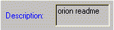
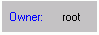
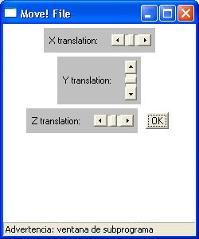
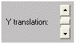
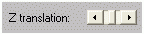

3.4.3 Funcionamiento del modelo File
El modelo file aparece en el entorno 3D representado mediante el siguiente objeto:
La imagen que apare en el cubo, depender� del tipo de fichero que hayamos subido.
MOVE! reconocer� algunos de los tipos de ficheros mas habituales:
- fichero PDF
- documento de WORD
- documento de ACCESS
- documento de EXCEL
- presentaci�n POWERPOINT
- fichero ZIP
- fichero HTML
- fichero POSTSCRIPT
- fichero MULTIMEDIA
- fichero gen�rico
Para poder acceder al control del modelo file solo tendremos que clicar sobre �l y nos aparecer� la siguiente ventana:

Permite ver el contenido del fichero
Permite coger el fichero, en el caso de que se trate de un fichero "Cogible", y llevarlo a otro sitio dentro del mismo Place
 Permite coger una copia del fichero, en el caso de que se trate de un fichero "copiable". Esta copia se guarda dentro la mochila
Permite coger una copia del fichero, en el caso de que se trate de un fichero "copiable". Esta copia se guarda dentro la mochila
Elimina el fichero del Place. Cuando eliminamos un fichero tambi�n desaparecer�n todas las copias que tengamos de �l en la mochila.
NOTA: S�lo el usuario que ha creado el fichero y un administrador podr� eliminarlo.
Nombre que tiene el fichero

Descripci�n del contenido del ficheroFecha en la cual ha sido creado

Propietario del fichero

Permite mover el fichero sobre el eje de coordenadas y del entorno 3D
Permite mover el fichero sobre el eje de coordenadas z del entorno 3DCierra esta ventana de control
NOTA: S�lo el usuario que ha creado el fichero y un administrador podr� moverlo.